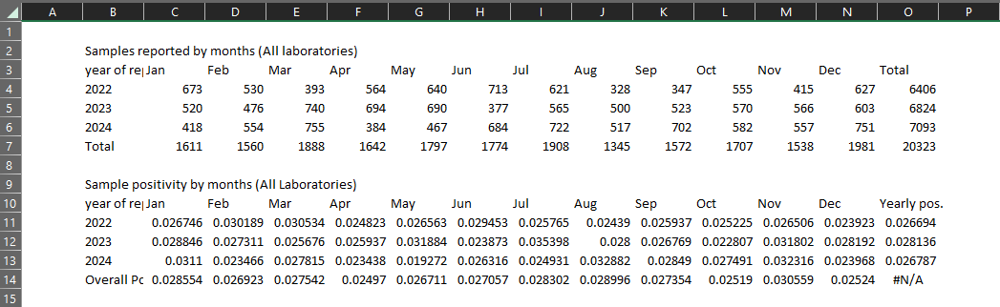

ebola_linelist %>%
filter(
age > 25,
district == "Bolo"
)Creating reports with R and MS Excel: a tutorial using the openxls2 package (EN)
Overview
| Case study characteristics | |
|---|---|
| Name: | openxlsx2 tutorial |
| Language: | English |
| Tools: | R, MS Excel |
| Location: | N/A |
| Scale: | N/A |
| Diseases: | N/A |
| Keywords: | R, Excel, Report, Export, Format, openxls2, Tutorial |
| Technical complexity: | Intermediate |
| Methodological complexity: | Intermediate |
Authorship
Original authors: Leonel Lerebours and Alberto Mateo Urdiales
Data source: None (Example data will be generated with R)
Instructions
Getting Help
There are several ways to get help:
- Look for the “hints” and solutions (see below)
- Post a question in Applied Epi Community with reference to this case study
Hints and Solutions
Here is what the “helpers” look like:
Click to read a hint
Here you will see a helpful hint!
Click to see the solution
Here is more explanation about why the solution works.
Posting a question in the Community Forum
… description here about posting in Community… TO BE COMPLETED BY APPLIED EPI
Terms of Use
- You may use the tutorial to learn how to generate reports using R by creating tables and exporting them in MS Excel for visualization with the
openxlsx2package, for educational purposes, and to apply the learned techniques to your personal or professional projects. This tutorial might be freely translated, copied, or distributed. No warranty is made or implied for use of the software for any particular purpose.
Feedback & suggestions
- You can write feedback and suggestions on this tutorial at the GitHub issues page
- Alternatively email us at: contact@appliedepi.org
Version and revisions
| Date | Changes made | Version | Author |
|---|---|---|---|
| July 2023 | First draft | 1.0 | Leonel Lerebours |
| September 2024 | Revision first draft | 1.1 | Alberto Mateo Urdiales |
Disclaimer
The main focus of the tutorial is to use the core functions of the
openxlsx2up to the version 1.8. You must have install MS Excel (or software equivalent like OpenOffice) to visualize the output tables.The data for this tutorial will be generated randomly (any resemble with real data is totally coincidence).
Guidance
Objectives of this case study
The goal of this tutorial is to introduce you in the use of openxlsx2 to export formatted tables in MS Excel.
Previous level of expertise assumed
It is recommended to have intermediate R skills and have at least a basic knowledge of
dplyr(from tidyverse package) like pipe operators and data wrangling. Here some reference.Epidemiological experience (e.g., knowledge of how to design outputs tables for reporting purpose)
Preparation for the case study
Create a folder named “openxls2_tutorial” in your laptop
Create an Rstudio project in the folder openxls2_tutorial. If you are unsure on how to do that, read the EpiRhandbook on R projects
You must have installed MS Excel (or software equivalent like OpenOffice) in your laptop to visualize the output tables.
Background
Why use MS Excel for reporting ?
Excel is one of the most popular softwares for data analysis, data visualization and many other capabilities, since Excel’s formatting options allow users to adjust fonts, colors, borders, and alignment to create visually appealing reports. MS excel use is very common in many areas, including epidemiological tasks that involve creating reports.
In some ways, MS Excel -as other point-and-click tools- is easy to learn, since it lets you “interact” with the data. For example, if we want to do quick calculations and produce a summary table, or if we want to modify a graph and to compare it with other previous reports.
If you have experience working in routine reporting -such as working with epidemiological surveillance-, probably you or a co-worker use or have used at some point Excel or any other spreadsheet software like OpenOffice to present tables and summaries.
However, even with all the great perks that Excel has, it is somewhat hard to automate a report with Excel even using a template with a pre-designed format. Is also time consuming to edit a spreadsheet every time you create a table or a graph (specially without knowledge of macros) and prone to errors.
Automating a report in Excel with R using openxlsx2 package
As described in the CRAN documentation of the openxlsx2 package the main purpose of this package is to simplify the creation of ‘xlsx’ files by providing a high level interface to writing, styling and editing worksheets.
In this short tutorial we are going to create and format a summary report from scratch in R without touching Excel or any other spreadsheet software.
Tutorial
Step 1: Getting ready
Step 1.1: Create a new R script
Once you have created an Rproject inside the “openxls2_tutorial” folder (as specified in the second point of the section Preparation for the case study). Create a new script with the name openxls2_tutorial.R and save it in the subfolder “openxls2_tutorial”.
Step 1.2: Install/load packages
As you probably know, the first part of our script (besides including -commented- some information about the aim, author, date last updated and contact details) is to install and load packages. Fortunately, there is a package that does this task very effectively: {pacman}. The function p_load() from this package will install any packages listed not already installed and will load them. If a listed package had already been installed, it will just load it. You can find more about installing/loading packages in the Packages section of the EpiRhandbook.
Using this approach, try to install and load the following packages: janitor, openxlsx2 and tidyverse.
Click to read a hint
You may end up using a long list of packages. Unfortunately different packages have functions with the same name. For example, the package {dplyr} (already installed with {tidyverse}) has a function called select() which we frequently use to subset columns of a data frame. But other packages such as {MASS} do also have a function called select(). This could create headaches if you want to subset columns using dplyr’s select() but R thinks you’re calling MASS’s select() (we call this masking - dplyr’s select() is masked by MASS’s select()). Given that you are more likely to use functions from {tidyverse}, ensure that this is the last package in your p_load() list so that functions from {tidyverse} (including {dplyr} functions) will always “prevail”.
Click to see a solution (try it yourself first!)
# Ensures the package "pacman" is installed
if (!require("pacman")) {
install.packages("pacman") }
# install (if necessary) from CRAN and load packages to be used
pacman::p_load(
janitor, # data cleaning and tables
openxlsx2, # create xlsx files
lubridate, # to manage dates
tidyverse # data management and visualization
)Step 2: Create a fake dataset
Before start using the functions of openxlsx2, we need to decide on what we want into the exported report (i.e., how many tables, what type of tables and which data inside.)
For this tutorial, the scenario is to do a summary of the microbiology laboratories’ production, including:
how many samples were received
how many were confirmed
when the samples had a confirmed diagnosis
We will not be using real data for this tutorial, but we will create it with R. Feel free to create it with MS Excel if you feel more comfortable.
Task: Generate a fake data frame of 1000 observations using the following variables:
date: from January 01, 2022 to December 31st, 2024.
laboratories: a categorical variable with five categories that have values from “A” to “E”.
n_samples: The Number of samples received. a numerical variable (ramdon number from 0 to 100).
n_confirmed: The Number of samples with positive results. A numerical variable calculated as a proportion of the previous variable, with a range that goes from 0.02 to 0.05.
pct_confirmed: The percentage of samples confirmed (n_samples/n_confirmed)
Click to read a hint
One way to create the dataframe is to use the function tibble() which comes when you install {tidyverse}. Inside tibble() you can create the specified columns using the sample() function which will create values randomly once you have specified the date rage, the categories etc. If you are unsure on how to do this read the documentation of the tibble function or this post from R bloggers which may help you. If you still do not manage, have a look at the solution. Don’t worry, this may be the most difficult part of the case study!
Click to see a solution (try it yourself first!)
# we first use this function which will ensure that, even though the dataframe will be generated with random values, we will ALWAYS get the same values if we rerun the script. The number inside is not relevant
set.seed(1300)
# Create dataframe for the example using 1000 observations
db <- tibble(
# Random dates
date=sample(seq(as.Date("2022-01-01"), # the begging of the period
as.Date("2024-12-31"), # the end of the period
by="day"), # the time interval
replace = TRUE, # setting replace to true means that each date can be chosen to be in the sample more than once.
1000), # this is the number of observations
# Random Labs (A to E)
laboratories=sample(LETTERS[c(1:5)], # we are saying that this columns should have letters from A (1) to E (5)
replace = TRUE,
1000),
# Random samples (by day and lab)
n_samples=sample(c(1:100),
replace = TRUE,
1000)) %>%
#Random confirmed samples
mutate(
n_confirmed=round(sample(seq( # the round function is used to round numbers. In this case the multiplication may mean that we have decimals
from=0.01,
to=0.05,
by=0.001),
replace=T,
1000)*n_samples,
digits = 0), # setting digits to 0 is saying to round it to the nearest whole number
# % positivity
pct_confirmed=n_confirmed/n_samples
)
#take a look at the db created
head(db)# A tibble: 6 × 5
date laboratories n_samples n_confirmed pct_confirmed
<date> <chr> <int> <dbl> <dbl>
1 2024-09-04 B 15 0 0
2 2023-02-27 C 90 1 0.0111
3 2023-06-02 A 88 4 0.0455
4 2023-02-19 B 1 0 0
5 2024-06-15 D 29 1 0.0345
6 2022-06-24 C 43 2 0.0465Note: If you want to create a dummy database with Excel, (or you want to use your data) you will have to import your file. To do that, you can use the function import() from the {rio} package or the function read_xlsx() from the openxlsx2 package. Read the dedicated EpiRhandbook Chapter for importing data if you have any doubts.
Step 3: Transfoming the data and creating the summary tables
As you can see, with this simple fake dataframe of 5 columns we may want to know :
How many samples were reported by month each year.
What is the proportion of the confirmed samples by month.
What is the proportion of samples reported by each laboratory.
The overall positivity rate by laboratory.
Step 3.1: Summary table with number of samples received
Let’s start by creating a table with the number of samples received by month each year. We want a table that has a nice formatting to put in a report, so we want a column with the year of reporting and one column for each calendar month. We also want to add the totals.
We will achieve this in to separate steps:
Task 1: Aggregate the number of samples received (column n_samples) by month and year. Called the new column with the aggregated number tot_samples
Click to read a hint
There are different ways to aggregate data. We suggest you use the function group_by() alongside summarise(), which is a {dplyr} approach. If you have never used this approach or if you have doubts, read the this section of the EpiRhandbook. In any case, you’ll need to create columns for the month and the year using the date column. You can do this using the functions month() and year().
Click to see a solution (try it yourself first!)
#table for samples by year and months
#table for samples by year and months
total_sample_tab <- db %>%
# we first create a column named months and years which are the respective months and years of the column "date"
mutate(months = month(date,label=T), # the argument label = T ensures that months have the name of the month and not their number
years = year(date)) %>%
# we group by the new columns
group_by(years, months) %>%
# and we create a new column by adding by each group the number of samples received
summarise(tot_samples = sum(n_samples), .groups = "drop") # the .groups = "drop" argument ungroup the data, which is always advisable after we finish aggregation
#check the new data frame
head(total_sample_tab)# A tibble: 6 × 3
years months tot_samples
<dbl> <ord> <int>
1 2022 Jan 1587
2 2022 Feb 1439
3 2022 Mar 1099
4 2022 Apr 906
5 2022 May 1378
6 2022 Jun 1646The new dataframe has one column for years, one for months and one for the total number of samples received. We call this the long format. This format is useful for further analysis/visualisation (creating a plot), but here what we want is to export this into a nice formatted table, so we want to the months to go in the columns. In other words, we want our dataframe in a wide format.
Task 2: Pivot your data from long to wide so that you have one column per month. Add the totals.
Click to read a hint
One way to do this is to use the function pivot_wider(). You need to specify where the names of the columns will come from and where the values will come from. If you are not familiar with pivoting or if you have doubts, spend some time in this section of the EpiRhandbook
Click to see a solution (try it yourself first!)
# pivoting from long to wide
total_sample_tab <- total_sample_tab %>%
pivot_wider(names_from = months, # so the names of the columns will be the months
values_from = tot_samples, # and the values the number of samples
values_fill = 0) %>% # if there were no data in a given month, it would fill it with 0
adorn_totals(c("col", "row")) # we add the sum of the totals both by row and column
total_sample_tab years Jan Feb Mar Apr May Jun Jul Aug Sep Oct Nov Dec Total
2022 1587 1439 1099 906 1378 1646 1640 799 955 1422 976 1550 15397
2023 1391 1488 1390 1870 1236 1488 1737 1097 1320 1642 1581 1647 17887
2024 1339 1156 1526 1188 1274 1609 1455 1342 1974 1226 1626 1974 17689
Total 4317 4083 4015 3964 3888 4743 4832 3238 4249 4290 4183 5171 50973Step 3.2: Summary table with positivity percentage
Task: Following a similar approach to the one we used in the previous step, create a table showing, by year and month, the positivity percentage of the samples
Click to see a solution (try it yourself first!)
positivity_tab <- db %>%
# we first create a column named months and years which are the respective months and years of the column "date"
mutate(months = month(date,label=T), # the argument label = T ensures that months have the name of the month and not their number
years = year(date)) %>%
# we group by the new columns
group_by(years, months) %>%
# we create new columns by adding by each group the number of samples received, the total confirmed and calcualte percentage
summarise(tot_samples = sum(n_samples),
tot_confirmed = sum(n_confirmed),
pct = round(tot_confirmed/tot_samples, digits = 5), .groups = "drop") %>% # round can be use to round up numbers. in this case to only 1 decimal
#we select the columns we're interested
select(years, months, pct) %>%
# we pivot them into wide format
pivot_wider(names_from = months,
values_from = pct,
values_fill = 0)
positivity_tab# A tibble: 3 × 13
years Jan Feb Mar Apr May Jun Jul Aug Sep Oct
<dbl> <dbl> <dbl> <dbl> <dbl> <dbl> <dbl> <dbl> <dbl> <dbl> <dbl>
1 2022 0.0309 0.0285 0.0319 0.0342 0.0268 0.0316 0.0287 0.0263 0.0304 0.0267
2 2023 0.0367 0.0289 0.0295 0.0267 0.0235 0.0343 0.0311 0.0228 0.0296 0.0311
3 2024 0.0261 0.0294 0.0242 0.0295 0.0330 0.0311 0.0261 0.0276 0.0314 0.0286
# ℹ 2 more variables: Nov <dbl>, Dec <dbl>Step 3.3: Summary table by laboratory
Task: Create a summary table for each year and laboratory with the total number of samples, the number of samples confirmed and the positivity percentage, as well as the total by rows.
Click to see a solution (try it yourself first!)
laboratory_summary <- db %>%
# we first create a column named years which are the years of the column "date"
mutate(years=year(date)) %>%
# we group by year and laboratory
group_by(years, laboratories) %>%
# we create new columns with the total number of samples received and the total number of samples confirmed
summarise(total_samples=sum(n_samples),
total_confirmed=sum(n_confirmed), .groups = "drop") %>%
# we arrange our table by laboratory and year
arrange(laboratories, years) %>%
# we add the totals by row
adorn_totals("row") %>%
# we add a column with the positivity percentage by row
mutate(positivity_rate= round(total_confirmed/total_samples, digits = 5)) %>%
# we rename the columns
rename("Years of reporting"=years,
"Laboratories"=laboratories,
"Total Samples"=total_samples,
"Confirmed Samples"=total_confirmed,
"% of confirmed samples"=positivity_rate)
laboratory_summary Years of reporting Laboratories Total Samples Confirmed Samples
2022 A 4202 135
2023 A 3638 98
2024 A 3997 110
2022 B 2795 76
2023 B 3759 104
2024 B 3800 119
2022 C 2441 68
2023 C 3425 111
2024 C 3045 90
2022 D 2730 75
2023 D 2863 83
2024 D 3553 106
2022 E 3229 102
2023 E 4202 127
2024 E 3294 93
Total - 50973 1497
% of confirmed samples
0.03213
0.02694
0.02752
0.02719
0.02767
0.03132
0.02786
0.03241
0.02956
0.02747
0.02899
0.02983
0.03159
0.03022
0.02823
0.02937Step 4: Export the tables to excel
Now that we have the tables for the summary report, lets do a overview of the main functions of openxlsx2 :
Main functions
wb_workbook(): to create a new workbook
wb_add_worksheet(): to add worksheets (name, zoom level and gridlines)
wb_add_data(): to add either a dataframe, a table, text string a single value
wb_save(): to export the workbook to a file (Excel format)
wb_open(): really handy to open right away the workbook in Excel (to see the results of the code)
Step 4.1: Set the table positions
The first column and row of the top table (Table with the total samples received) in the exercise have the starting position at cell B3, whilst the bottom table (The positivity table) starts at cell B10.
The first row of the first table (Table with the total samples received) goes from cell B3 to cell O3, the last row range is B7 to O7. For the bottom table (The positivity table) the first row range is B10 to N10 and the bottom row is from B14 to N14.
For the vector with the ranges, we have to specify the columns as number instead of letters. the rowcol_to_dims() function will convert the numbers coordinates to the Excel range format (such as A1:B3). With the combination of the function ncol() and nrow() and the starting position we can get the range of the whole table.
Task: Use the function rowcol_to_dims() to obtain the range of the columns for the Table with the total samples received (B3:07). Assign this range to the name tab1_dimres. Get also the range for the same table’s title (B2:B2)
Click to see a solution (try it yourself first!)
#get the table 1 (Table with the total samples received) dimensions
tab1_dimres <- rowcol_to_dims(
# 1:ncol() will give us the a range for the number of columns of the table. By adding one we are specifying that we want the range to start in B instead of A
col = 1:ncol(total_sample_tab) + 1,
# similarly 3:nrow() will create a range that starts in 3 and will go until nrow() + 3, whic is 7
row = 3:(nrow(total_sample_tab) + 3))
tab1_dimtitle <- rowcol_to_dims(col = 2, row = 2)
#get the first row and last row dimension of table 1 (Table with the total samples received)
tab1_dimfirstrow<- rowcol_to_dims(col = 1:ncol(total_sample_tab)+1, row=3)
tab1_dimlastrow <- rowcol_to_dims(col = 1:ncol(total_sample_tab)+1, row=nrow(total_sample_tab)+3)Since the table1 (Table with the total samples received) is a table that will grow over the time from top to bottom, the starting position of the table 2 (The positivity table) must depend on the starting position of the first table, if we want to dinamically setup the starting position of The positivity table.
Lets create a vector with the sequence of numbers of the rows where the The positivity table will be located based on the position of table 1 and the spaces between Table with the total samples received and The positivity table.
Table with the total samples received has 7 rows nrow(total_sample_tab) and the starting position in the spreadsheet is row 3, and we want the second table starts two rows after the end of table 1. So, the starting position row of table 2 is the sum of the numbers of rows of table 1 + the starting position of table 1 + the rows after table 1 last row.
Click to see a solution (try it yourself first!)
#vector with the row for the starting position of table 2
tab2_row_start <- nrow(total_sample_tab)+3+3
tab2_row_seq <- seq(from= nrow(total_sample_tab)+3+3,
to=nrow(positivity_tab)+nrow(total_sample_tab)+3+3,
by=1)
tab2_dimres <- rowcol_to_dims(col = 1:ncol(positivity_tab)+1, #the columns are not affected
row = tab2_row_seq)
#get the first row and last row dimension of table 2 (The positivity table)
tab2_dimtitle <- rowcol_to_dims(
col = 2,
row = tab2_row_start - 1)
tab2_dimfirstrow<- rowcol_to_dims(
col =1:ncol(positivity_tab) + 1,
row=tab2_row_start)
tab2_dimlastrow <- rowcol_to_dims(
col = 1:ncol(positivity_tab) + 1,
row =nrow(positivity_tab) + tab2_row_start)
tab2_dimbody_pct <- rowcol_to_dims(
col = 2:ncol(positivity_tab) + 1,
row = 1:nrow(positivity_tab) + tab2_row_start)We are getting there!, now that we have the ranges where we just need to format it.
Step 4.2: Creating the table in MS Excel
The next step now is to start using the {openxlsx2} functions to:
Add the tables
Add the formatting/styles
Save the workbook into a Excel file
Task: Looking at the {openxlsx2} functions described in the section Main functions have a go at:
Create a workbook object
Add at least one worksheet
Below you have one possible solution that we propose
Click to see a solution (try it yourself first!)
wb_main <- wb_workbook("Laboratory_Data") %>% #creating the workbook
wb_add_worksheet("lab summary", #adding the first worksheet
gridLines = FALSE, #remove gridlines
tabColor = "red") %>% #tab color in the spreadsheet
wb_add_data(x="Samples reported by month and year (All laboratories)", #adding the title of table 1
start_col = 2, #title starting in col 2 or "B"
start_row = 2) %>% #title starts in row 2 as well
wb_merge_cells(rows=2, #merging the row above Table 1
cols = 1:ncol(total_sample_tab) + 1) %>% #column range of Table 1
wb_add_data(x=total_sample_tab, start_col = 2, #data starts in column 2 and row 3
start_row =3 ) %>%
wb_add_data(x="Sample positivity by month and year (All Laboratories)", #add title of table 2
start_col = 2,
start_row = tab2_row_start-1) %>%
wb_merge_cells(rows= tab2_row_start - 1, #merging the row above Table 2
cols = 1:ncol(positivity_tab)+1) %>%
wb_add_data(x=positivity_tab, start_col = 2,
start_row =tab2_row_start, na.strings ="-" )
wb_open(wb_main) # to see a previewWe can see so far what we have, almost done! 
Step 4.3: Formatting the table
No we just need to format the table.
Task: Format the table using the {openxlsx2} functions described in the Related to formatting section.
Below is our proposed solution.
Click to see a solution (try it yourself first!)
wb_main_w_styles <- wb_main %>%
wb_add_cell_style( 1, tab1_dimres,
vertical = "center",
horizontal = "center",
wrapText = 1) %>%
wb_add_cell_style(1 , tab1_dimtitle,
vertical = "center",
horizontal = "center") %>%
wb_add_border(1, tab1_dimfirstrow,
top_border = "thick",
top_color = wb_color(hex = "000000"),
bottom_border = "thick",
bottom_color = wb_color(hex = "000000"),
inner_vgrid = "none",
left_border="none",
right_border = "none") %>%
wb_add_font(dims = tab1_dimfirstrow,
bold = "double") %>%
wb_add_font(dims = tab1_dimtitle,
size=12,
bold = "double") %>%
wb_add_font(dims = tab1_dimlastrow,
size=11,
bold="dobule") %>%
wb_add_border(dims = tab1_dimlastrow,
top_border = "thick",
top_color = wb_color(hex = "000000"),
inner_vgrid = "none",
left_border="none",
right_border = "none",
bottom_border = "none") %>%
wb_add_numfmt(dims = tab1_dimlastrow,
numfmt = "#,0") %>%
wb_add_numfmt(dims = rowcol_to_dims(row=1:nrow(total_sample_tab)+3,
col=ncol(total_sample_tab)+1),
numfmt = "#,0") %>%
wb_set_col_widths(cols = 2, widths = 20) %>%
wb_set_row_heights(rows = c(2, 3,nrow(total_sample_tab)+3), heights = 30 ) %>%
wb_add_cell_style(1, tab2_dimres,
vertical = "center",
horizontal = "center",
wrapText = 1) %>%
wb_add_cell_style(1, tab2_dimtitle,
vertical = "center",
horizontal = "center") %>%
wb_add_border(1, tab2_dimfirstrow,
top_border = "thick",
top_color = wb_color(hex = "000000"),
bottom_border = "thick",
bottom_color = wb_color(hex = "000000"),
inner_vgrid = "none",
left_border="none",
right_border = "none") %>%
wb_add_font(dims=tab2_dimfirstrow,
bold="double") %>%
wb_add_font(dims=tab2_dimtitle,
size=12,
bold="double") %>%
wb_add_border(dims = tab2_dimlastrow,
top_border = "none",
inner_vgrid = "none",
left_border="none",
right_border = "none",
bottom_color = wb_color(hex = "000000"),
bottom_border = "thick") %>%
wb_add_numfmt(dims = tab2_dimbody_pct,
numfmt = "#.0%") %>%
wb_set_col_widths(cols = 2, widths = 20) %>%
wb_set_row_heights(rows = c(tab2_row_start-1,tab2_row_start,nrow
(positivity_tab)+tab2_row_start), heights = 30 ) %>%
wb_open() # to open a temporary file If all functions and commands are correct, you should see something like the following output:
Step 4.4: Exporting the table
The last step is to export the table and save it in our computer.
Task: Using the function wb_save(), export the tables into your local computer
Click to see a solution (try it yourself first!)
# save the output into an excel file
wb_save(wb_main_w_styles, "Lab_tables.xlsx", overwrite = T) Depending on how complex your report is, you can add more worksheets. Iteration (like using map() from purrr) could help you to automate several reports from different provinces or geographical units. Have a look at the Iteration chapter of the EpiRhandbook if you want to explore this further.
There are other great functions to add more details or expand the format of the tables, for example adding conditional format, or sparklines. This tutorial covers just the main functions and what is the most common task to add formats. For more in depth formatting, please review the openxlsx2 following vignette
Thanks for reading this tutorial!